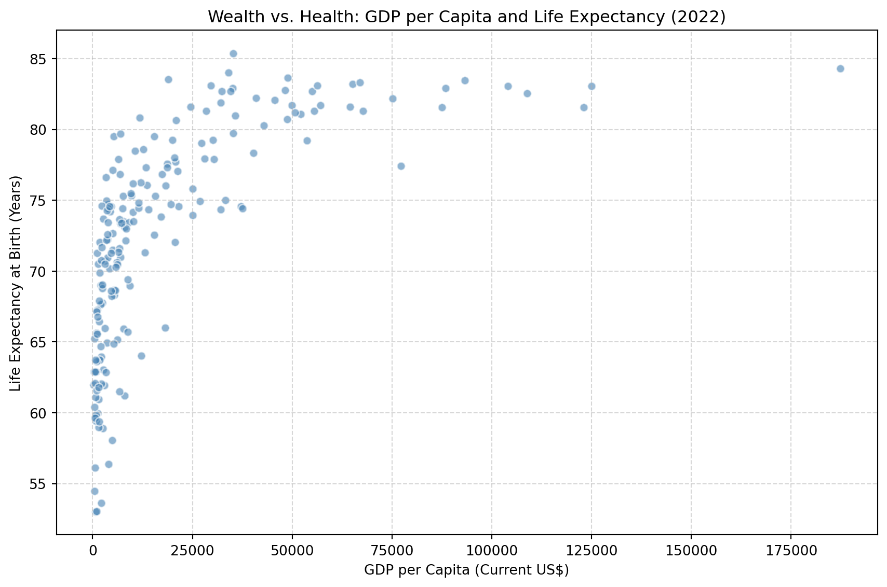
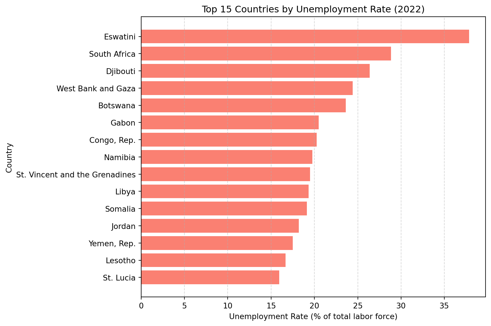

import pandas as pd
# Load the dataset
wdi = pd.read_csv('wdi.csv')World Development Indicators 2022 Analysis
Introduction
Introduction
This report analyzes global economic and health metrics for the year 2022. We will conduct an exploratory data analysis focusing on three key variables: GDP per capita, life expectancy, and unemployment rate. The relationship between national income and population health is a foundational concept in demographic economics (Preston 1975). Furthermore, labor market stability plays a critical role in public health, as widespread unemployment has been consistently linked to higher mortality rates (Roelfs et al. 2011). By visualizing these metrics, we aim to highlight the current state of global disparities.
Data Loading
We will use Python and the pandas library to load and manipulate the World Development Indicators dataset for 2022.
Exploratory Data Analysis
To better understand the global landscape in 2022, we will focus our exploratory data analysis on three key indicators:
- GDP per capita (
gdp_per_capita): A measure of economic output per person. - Life expectancy (
life_expectancy): A core measure of public health and longevity. - Unemployment rate (
unemployment_rate): An indicator of labor market health and economic stability.
First, let’s examine the descriptive statistics and check for any missing data within these three columns.
target_vars = ['gdp_per_capita', 'life_expectancy', 'unemployment_rate']
print(wdi[target_vars].describe().round(2))
print(wdi[target_vars].isna().sum()) gdp_per_capita life_expectancy unemployment_rate
count 203.00 209.00 186.00
mean 20345.71 72.42 7.27
std 31308.94 7.71 5.83
min 259.03 53.00 0.13
25% 2570.56 66.78 3.50
50% 7587.59 73.51 5.54
75% 25982.63 78.47 9.46
max 240862.18 85.38 37.85
gdp_per_capita 14
life_expectancy 8
unemployment_rate 31
dtype: int64Visualizations
To further analyze our selected indicators, we can visualize their relationships and distributions.
First, we will look at the relationship between a country’s wealth (GDP per capita) and the health of its citizens (life expectancy).

The scatter plot above demonstrates a clear trend in that life expecatancy is positively correlated with GDP per Capita. Higher GDP generally is associated with higher life expectancy, although it seems to level off at the upper end, forming a logistic curve.
Next, we examine the labor market by highlighting the countries that experienced the highest unemployment rates in 2022.

This bar chart highlights the nations facing the most severe labor market challenges, with several countries experiencing unemployment rates exceeding 20%.
Key Statistics Summary
To consolidate our findings, we can extract the global averages and extremes for our selected indicators.
| GDP per Capita (US$) | Life Expectancy (Years) | Unemployment Rate (%) | |
|---|---|---|---|
| mean | 20345.7 | 72.42 | 7.27 |
| min | 259.03 | 53 | 0.13 |
| max | 240862 | 85.38 | 37.85 |
As detailed in Table 1, the global average life expectancy is approximately 72 years, but the minimum drops down to roughly 53 years. This severe disparity in health outcomes is closely tied to economic standing, which we visualized earlier in Figure 1. That scatter plot clearly demonstrates that nations with higher economic output tend to secure much longer life expectancies for their citizens.
Furthermore, global economic stability varies wildly. While the average global unemployment rate sits around 7% (Table 1), our bar chart analysis in Figure 2 highlights that several nations faced staggering unemployment crises, with rates exceeding 20% to 30% of their total labor force in 2022.
References
Preston, Samuel H. 1975. “The Changing Relation Between Mortality and Level of Economic Development.” Population Studies 29 (2): 231–48.
Roelfs, David J, Eran Shor, Karina W Davidson, and Joseph E Schwartz. 2011. “Losing Life and Livelihood: A Systematic Review and Meta-Analysis of Unemployment and All-Cause Mortality.” Social Science & Medicine 72 (6): 840–54.